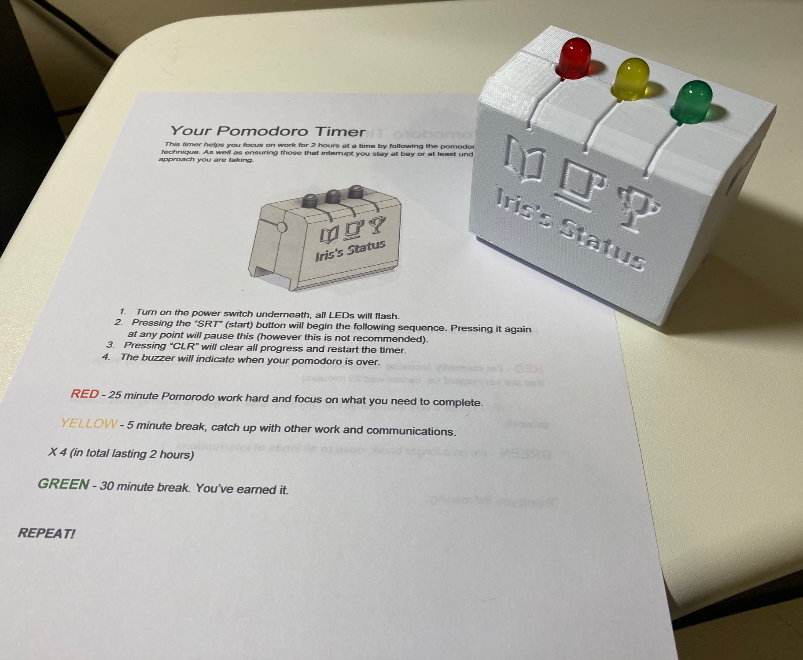

Author: Gregory Doran
Published: 16th February 2021
Pomodoro technique is a method of time management developed by Francesco Cirillo, whereby a timer is used to break down work into intervals. Typically these intervals are 25 minutes of focused work followed by a 5 minute break and repeating the 25 minute interval for a total of 4 then a longer break is allowed. This is great when you want to be focused on one thing but allow yourself a breaks and time to catch up on other work items. There's a lot information out there and I recommend reading up on it.
My partner had been following this process and was having some success whilst revising for an exam. However, one of the greatest enemies to the common procrastinator is a smart phone. She was having to use an app on her phone and during these stressful periods struggled to tear herself away from the distracting influence of notifications.
I couldn't find anything on the web that functioned as a pomodoro timer specifically. Just a quick Google or a search on Amazon brought up a bunch of Tomato shaped mechanical timers. Nothing jumped out as resolving all of these requirements.
Potentially there could be a market outside for this, but no exhaustive research was done . It just sounded fun and relatively simple project to do. If it gets to a point where a few can be made I'll share them with friends so they can give real feedback. Additionally for the first prototype my partner would be the guinea pig.
The initial prototype took about two weeks to complete. Spending most evenings and weekends towards finishing it.
This was a very rough prototype which my could be used straight away, that way at least my partner could give some feedback to improve further iterations. It was based around an Arduino Nano 33 IoT, which happened to be lying-around. Certainly a bit overkill as this chip features Wifi and Bluetooth and has a much more powerful microprocessor than needed. The whole thing was powered by a single 9V battery which drained far too quickly with this microprocessor.
The firmware for the device was developed in C++ using Platform IO . Platform IO is a great for those wanting to migrate away from the typical Arduino development environment (IDE) whilst allowing access to the libraries provided through the Arduino tools. It integrates well enough with the CLion IDE from JetBrains. Using that IDE you get much richer inspections as well as the typical syntax corrections, version control and refactoring tools.
The code itself was chucked together quite quickly, but once working I could use the breadboard mounted version of the device at the same time as designing the casing in Autodesk 360. Each of the pomodoro intervals was defined as an implementation of an abstract "State" class. For each the following methods could be defined:
update(unsigned long elapsedMS)
- which would be ran periodically and passed elapsed milliseconds since the device was
reset. For the "working" state this would check whether 25 minutes had passed and if so
call for the transition into the "paused" state.
activate()
- ran on "entering" the state. For example when entering the "working" (green) state this
triggers the peizo buzzer to sound.
deactivate()
- ran when "exiting" the state. This was only really used for tallying up time spent if
transitioning to the "paused" state so it could continue where it set off from if
"unpaused".
The
main()
method for the firmware monitors the input from the buttons and triggers the transitioning
between the states as that happened as when time had elapsed.
The casing was printed in PETG. In this case I used "snow white" PETG from Ooznest . Comprising of 4 parts, which were the front, back and two buttons it was printed on a Prusa i3 MK3S using the powdered sheet print bed. The print bed gives a wonderfully bumpy but aesthetically pleasing texture.
A basic computer aided design (CAD) render of the 3D printed case:
The inner parts of the prototype show some basic soldering and the peizo buzzer:
The prototype with instructions. The other side of the instructions give an explanation of the technique for showing to a colleagues:
I'm working on a new prototype which is a bit more stripped back using an ATMega8, for this the plan is to order a small batch of printed circuit boards (PCBs) and make 5-10 that I can give to people.
One of the first issues the new version will address is power. The 9 volt battery would drain very fast, partly due to the development board used but also due to the low capacity of these batteries. For the newer version I might opt for three "AAA" batteries. Additionally the new version will be "configurable". Using small switches on the back of the PCB will allow different presets for the interval durations. I currently like using a shorter pomodoro but more frequent to limit the time I look at emails and instant messages whilst at work.
I'll hopefully remember to post more information about that new version here and perhaps on social media. Contact details here if you'd like to comment or discuss .